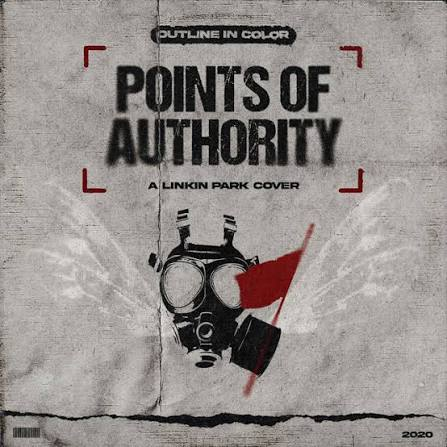

Mis canciones favoritas:
points of authority
La canción Points of Authority de Linkin Park, perteneciente al álbum Hybrid Theory (2000), habla sobre el abuso de poder, la manipulación y el control que una persona puede ejercer sobre otra. Expresa el sentimiento de estar cansado de que alguien intente imponer sus decisiones, controlar tus pensamientos o hacerte sentir inferior. También transmite frustración, enojo y el deseo de dejar de permitir que otras personas tengan autoridad sobre tu vida. En general, la canción representa la lucha por recuperar la independencia, defender la propia identidad y no dejar que los demás decidan quién eres o cuánto vales.

Somewere i belong
“Somewhere I Belong” – Linkin Park La canción Somewhere I Belong de Linkin Park, perteneciente al álbum Meteora (2003), habla sobre sentirse perdido, confundido y no encontrar un lugar al que realmente pertenecer. Expresa la lucha interna de una persona que busca comprenderse a sí misma, superar sus inseguridades y dejar atrás sentimientos negativos. También transmite la necesidad de encontrar paz, aceptación y un propósito en la vida. En general, la canción representa el deseo de descubrir quién eres, sentirte aceptado y encontrar un lugar donde puedas ser tú mismo sin miedo a ser juzgado.
One step closer
“One Step Closer” – Linkin Park La canción One Step Closer de Linkin Park, perteneciente al álbum Hybrid Theory (2000), habla sobre la frustración, el estrés y el enojo que una persona siente cuando llega a su límite emocional. Expresa el cansancio de soportar situaciones difíciles, críticas o conflictos que provocan una gran presión. También transmite la sensación de no poder expresar lo que uno siente y necesitar un momento para liberarse de toda esa tensión. En general, la canción representa la lucha contra la frustración acumulada y el deseo de alejarse de aquello que te hace sentir sobrepasado.
Regresar